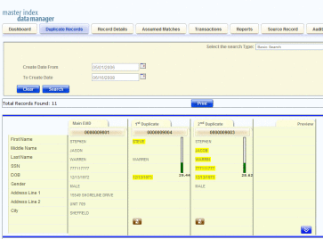

Working with Potential Duplicate Profiles on the MIDM
The Duplicate Records function of the MIDM allows you to view any object profiles that are marked as potential duplicates of each other by the master index application. You can search for and view potential duplicate profiles on the MIDM, and then fix the potential duplication by either merging or resolving the two profiles. You can view potential duplicates that are resolved, but not those that are merged.
Perform any of the following tasks to monitor and fix potential duplicate profiles.
Finding Potential Duplicate Profiles on the MIDM
Potential duplicate profiles are determined based on the matching probability weight that indicates how closely two profiles match. You can easily find and compare potential duplicate profiles using the MIDM Duplicate Record function.
Figure 49 Potential Duplicate Comparison Page
To Find Potential Duplicates
- Obtain information about the object whose potential duplicates you want to view, such as a system in which they are registered or the login ID of the user who created the object profile.
- In the MIDM tabbed headings, click Duplicate Records.
The Duplicate Records basic search page appears.
Figure 50 Duplicate Records Basic Search Page

- Do one of the following:
- To search by date range only, enter the date range in the basic search fields and then click Search.
- To use additional criteria for the search, select Advanced Search from the Search
Type field, enter your search criteria, and then click Search.
For more information about advanced search fields, see About Duplicate Records Search Fields on the MIDM.
The Duplicate Records results list appears with key information for each potential duplicate record displayed.
- In the results list, compare the displayed information to determine whether you want
to view a detailed comparison of the potential duplicate profiles.
Figure 51 Potential Duplicate Search Results List
 - To view a detailed comparison for a set of potential duplicate profiles, click
the Preview button to the left of the profiles.
Tip - The Preview button is the blue chevron button to the left of the potential duplicate profiles.
- To view the source records associated with any of the displayed profiles, click View Sources beneath that profile. To return to the duplicate record comparison view, click View Sources again.
- To view a transaction history for a displayed profile, click View History beneath that profile.
- To mark a profile as not being a duplicate of the main profile, see Resolving Potential Duplicate Profiles on the MIDM.
- To merge two or more profiles, see Merging Potential Duplicate Profiles.
- To start a new search for potential duplicate records, click Advanced Search at the top of the page.
About Duplicate Records Search Fields on the MIDM
The fields located on the Duplicate Records search page allow you to specify information about the potential duplicate profiles you want to view.
Table 7 Duplicate Records Search Fields
In this field … |
type or select ... |
|---|---|
The enterprise-wide unique identification number of one of the profiles you want to view. |
|
The potential duplicate status of the profiles you want to view. Possible values for this field are Unresolved, Resolved, or Permanently Resolved. |
|
The external system with which the object profile that caused the potential duplicate flag is associated. |
|
The local ID associated with the object profile in the specified system. The name of this field might be different for your implementation. |
|
A beginning create date for the profiles you want to view. The query is performed for transactions that were created between the Create Date From (and Create Time From) and the To Create Date (and To Create Time). |
|
The beginning create time for the profiles you want to view (using 24-hour notation). If no time is entered, the default value is 00:01 (12:01 A.M.). |
|
The ending create date for the profiles you want to view. |
|
The ending create time for the profiles you want to view (using 24-hour notation). If no time is entered, the default value is 24:00. |
Merging Potential Duplicate Profiles
When you compare potential duplicate profiles, you might find that the object profiles represent the same entity, or that a source record from one profile actually belongs in the other profile. You can perform either an object profile merge or a source record merge to correct this. When you merge profiles, the SBR of the surviving profile is automatically recalculated based on the source records involved in the merge. You can combine up to four profiles.
This topic only describes object profile merges. For more information about merging object profiles, see Combining Object Information on the MIDM. To learn how to merge source records, see Merging Source Records on the MIDM.
To Combine Duplicate Profiles From the Comparison Page
- Perform a search for potential duplicates on the Duplicate Records page, as described in Finding Potential Duplicate Profiles on the MIDM.
- To view a detailed comparison for a set of potential duplicate profiles, click
the Preview button to the left of the profiles.
Tip - The Preview button is the blue chevron button to the left of the potential duplicate profiles.
- On the Duplicate Records comparison page, determine which of the displayed profiles you want to keep and then click the EUID of that profile.
- Click the EUIDs of any other associated profile you want to merge into
the profile you selected above.
Each profile changes color to indicate it is selected.
Figure 52 Duplicate Records – Selecting Profiles to Merge
- In the Preview panel, click Preview.
The merge preview profile appears, allowing you to view the profile as it will appear after the merge.
Figure 53 Duplicate Records – Merge Preview Profile
- Compare the field values in the profiles to be merged to determine which
values to populate into the kept profile. Click any values you want to
keep.
Note - Selecting a value to keep in the merge result profile creates a link from the SBR to the source record field that populated the field. For example, if the first name field from Record A is populated from Source Record 1, and you merge Record A into Record B and select the first name value from Record A, a link is created from the first name field in the resulting SBR to the first name field in Source Record 1. For more information on linking SBR fields to source record fields, see Overriding the Survivor Calculator's SBR.
- Review the merge preview profile, and then click Merge to finalize the merge.
- On the confirmation dialog box that appears, click OK.
The surviving profile appears.
- Review the surviving object profile to determine whether any source records need to be merged or deactivated.
Resolving Potential Duplicate Profiles on the MIDM
When you compare two potential duplicate profiles and determine that they do not represent the same object, you can resolve the two profiles to flag the profiles as not being potential duplicates. There are two types of resolution. Resolve removes a potential duplicate flag, but if one of the resolved profiles is updated the records might be listed as potential duplicates again. Resolve Permanently flags the two profiles as being permanently resolved regardless of whether one of the resolved profiles is updated.
To Resolve Potential Duplicate Profiles From the Results List
If the fields on the Duplicate Records search results list are sufficient to determine that two profiles do not represent the same object, you can resolve the profiles from the search results list.
- Perform a search for potential duplicates on the Duplicate Records page, as described
in Finding Potential Duplicate Profiles on the MIDM, and display the results list.
The results list displays key identification fields that might provide enough information for you to determine whether the profiles should be resolved.
Figure 54 Duplicate Records Search Result Entry

- Scroll through the results until you see the profiles you want to resolve.
- Beneath the duplicate profile you want to resolve from the Main EUID (the
profile in the far left column), click Different Records.
Tip - The Different Records icon is the brown icon beneath each profile.
- On the confirmation dialog box that appears, do one of the following:
- To flag the potential duplicate profiles as resolved but still allow the potential duplicate listing to be reinstated in the future, select Resolve Until Recalculation.
- To flag the potential duplicate profiles as resolved and never allow the potential duplicate listing to be reinstated, click Resolve Permanently.
- On the confirmation dialog box, click OK.
The status of the potential duplicate entry is changed to Resolved and the profiles are no longer regarded as potential duplicates of one another.
- Repeat this for each duplicate profile you want to resolve from the main profile.
To Resolve Potential Duplicate Profiles From the Comparison Page
If you need to view detailed information about two profiles to determine whether they are a match, view them on the Duplicate Records comparison screen before you resolve them.
- Display a set of potential duplicates on the Duplicate Records comparison page, as
described in Finding Potential Duplicate Profiles on the MIDM.
Figure 55 Duplicate Records Comparison Page
- Beneath the duplicate profile you want to resolve from the Main EUID (the
profile in the far left column), click Different Records.
A confirmation dialog box appears.
- On the confirmation dialog box that appears, do one of the following:
- To flag the potential duplicate profiles as resolved but still allow the potential duplicate listing to be reinstated in the future, select Resolve Until Recalculation.
- To flag the potential duplicate profiles as resolved and never allow the potential duplicate listing to be reinstated, click Resolve Permanently.
- On the confirmation dialog box, click OK.
The status of the potential duplicate entry is changed to Resolved and the profiles are no longer regarded as possible duplicates of one another.
- Repeat this for each duplicate profile you want to resolve from the main profile.
Unresolving Potential Duplicate Profiles on the MIDM
If two profiles were resolved and flagged as not being potential duplicates in error, you can undo the resolve transaction and mark them as potential duplicates once more. You can perform this from either the results list or the comparison page.
To Unresolve Potential Duplicate Profiles From the Results List
If the fields on the Duplicate Records search results list are sufficient to determine that a resolve transaction was performed in error, you can unresolve the profiles in the search results list.
- Perform a search for potential duplicates on the Duplicate Records page, as described
in Finding Potential Duplicate Profiles on the MIDM, and display the results list.
The results list displays key identification fields that might provide enough information for you to determine whether the profiles should be unresolved.
Figure 56 Duplicate Records Search Result Entry
- Scroll through the results until you see the profiles you want to unresolve.
- Beneath the duplicate profile you want to unresolve from the Main EUID (the
profile in the far left column), click Potential Duplicate.
The status of the potential duplicate entry is changed from Resolved and the profiles are once again regarded as potential duplicates of one another.
To Unresolve Potential Duplicate Profiles From the Comparison Page
If you need to view detailed information about two profiles to determine whether they should be unresolved, view them on the Duplicate Records comparison screen.
- Display a set of potential duplicates on the Duplicate Records comparison page, as
described in Finding Potential Duplicate Profiles on the MIDM.
Figure 57 Duplicate Records Comparison Page
- Beneath the duplicate profile you want to unresolve from the Main EUID (the profile in the far left column), click Potential Duplicate.
- On the confirmation dialog box, click OK.
The status of the potential duplicate entry is changed from Resolved and the profiles are once again regarded as possible duplicates of one another.